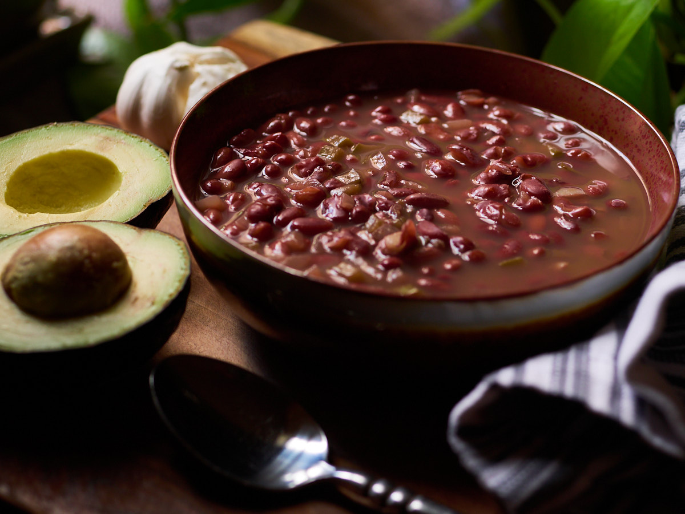

After making bean soup many times, I’ve arrived at this particular method of preparing them. I enjoy it because the flavor that comes out is rich and is quite the contrast if all you are used to is canned beans.
When I have a bowl of red bean soup, I add a little bit of cooked rice. For condiments, I’ll have any of the following: ripe avocado, sour cream, hard cheese and tortillas. There are times where I’ll have all of them and it becomes a hearty meal.
A link to the YouTube video: Flavorful Red Bean Soup
Equipment
- Instant Pot
Ingredients
- 1 lbs. Organic Red Beans
Spices
- 1 Bay Leave
- 1 tsp Chipotle Powder
- 1.5 tsp Cumin
- 4.5 tsp Diamond Kosher Salt
- .5 tsp Dry Oregano
Diced
- 3 Cloves Garlic
- 1/3 Onion
- 1/4 Green Pepper
Liquid
- 6.5 Cups of Water - (1.53 Liters)
Instructions
- Clean beans to remove any possible debris.
- Rinse the beans thoroughly
- Add beans, spices, chopped ingredients and water to Instant Pot.
- Cook at high pressure for 30 minutes. Allow 10 minutes to pass and then release pressure.
- **If you have soaked the beans the day before then cooking at high pressure can be set to 9 minutes instead.